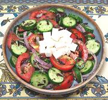

|
Georgian SaladR. Georgia - Kutaisuri Salati | ||||
| Serves: Effort: Sched: DoAhead: |
5 salad ** 1 hr Most |
The most popular salad in Georgia. I have taken some liberty with the dressing. In Georgia they may sprinkle salt and pepper onto the salad, then drizzle it with either Olive Oil or Wine Vinegar. | |||
|
------ 1 10 3 1 1 1/4 3 ------ 2 2 1/3 1/4 ------ 3 |
--- # oz oz cl c T --- T T t t --- oz |
-- Salad Tomatoes Cucumbers (1) Onion, red Garlic Chili, Green (2) Basil, Opal (3) Cilantro -- Dressing Wine Vinegar Olive Oil ExtV Salt Pepper -- Optional Imeretian Cheese (4) |
Salad - (25 min + 30 min chill time)
|